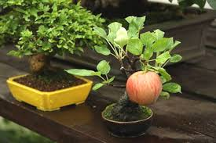

so apples right, theyre a type of fruit produced by a tree.
they are the most commonly grown species in the genus malus
Theyre cultivated world wide but the tree originated in central asia.
their wild ancestor, malus sieversii is still found there today
They have been grown for thousands of years in asia and europe and were brought to the americas by european colonists.
trees and fruit are prone to a number of fungal, bacterial and pest problems, which can be controlled by a number of organic and non-organic means. in 2010, the fruit's genome was sequenced as part of research on disease control and selective breeding in apple production
apples have religious and mythological significance in many cultures such as norse, greek, and european christian tradition
apple trees can be big if theyre grown from seed (but there are bonsai bonsai apple trees which are exceptionally small, actually produce mini apple fruits, and i love them)
image from this website
apple cultivatars are propagated by grafting onto rootsocks which control the size of the resulting tree (ie, bonsai apple trees)
there are more than 7500 different types of apples, and they all taste different and some are better for cooking or eating or making cider from
world production of apples in 2014 was 84.6 million tonnes, china accounted for nearly half of the total